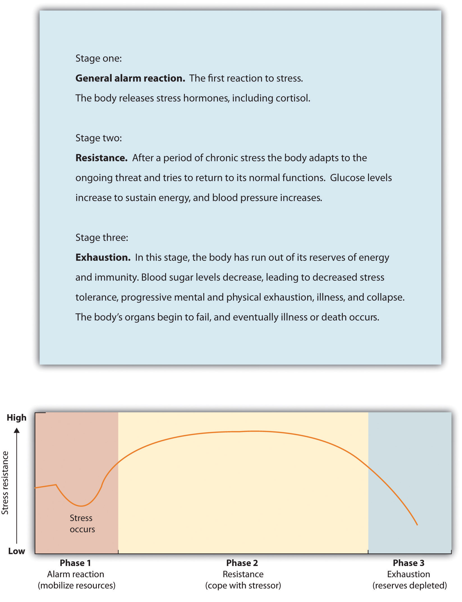
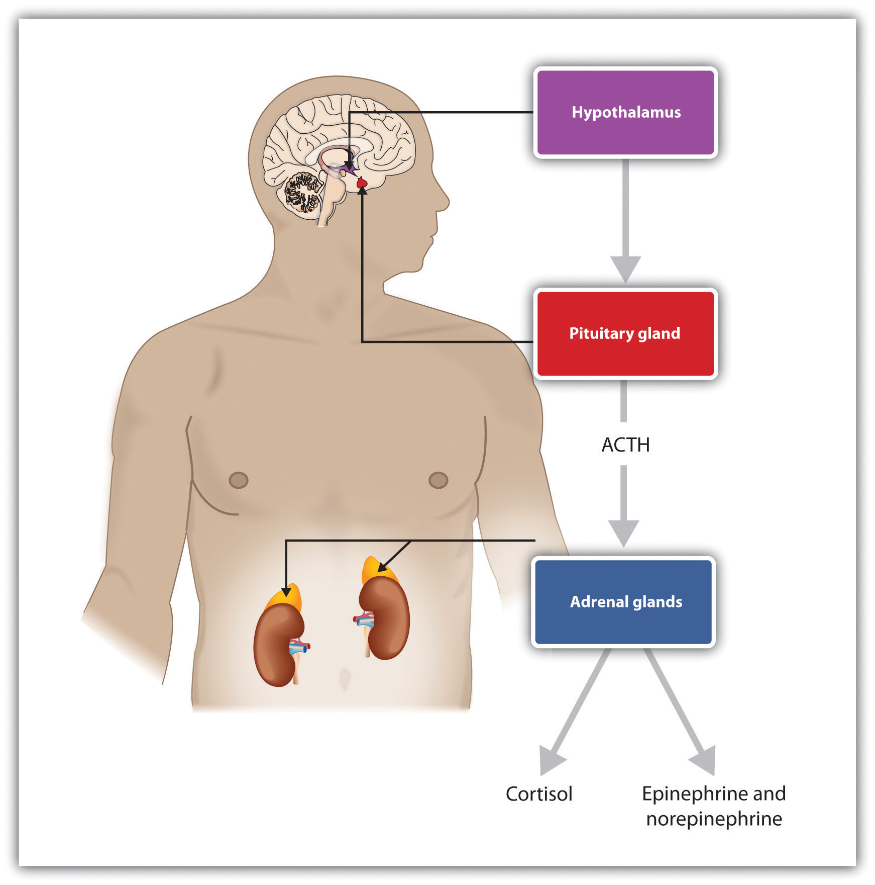
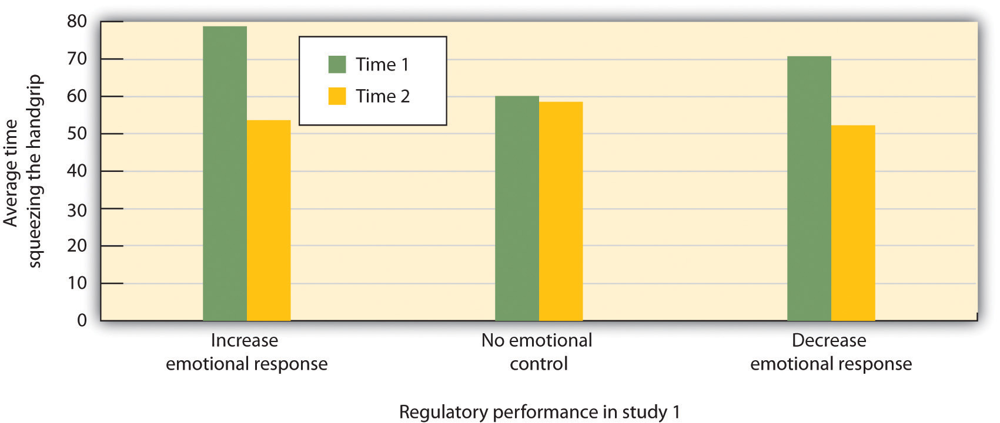

Emotions matter because they influence our behavior. And there is no emotional experience that has a more powerful influence on us than stress. StressPhysiological responses that occur when an organism fails to respond appropriately to emotional or physical threats. refers to the physiological responses that occur when an organism fails to respond appropriately to emotional or physical threats (Selye, 1956).Selye, H. (1956). The stress of life. New York, NY: McGraw-Hill. Extreme negative events, such as being the victim of a terrorist attack, a natural disaster, or a violent crime, may produce an extreme form of stress known as posttraumatic stress disorder (PTSD)A medical syndrome that includes symptoms of anxiety, sleeplessness, nightmares, and social withdrawal., a medical syndrome that includes symptoms of anxiety, sleeplessness, nightmares, and social withdrawal. PTSD is frequently experienced by soldiers who return home from wars, with those who have experienced more extreme events during the war also experiencing more PTSD.
When it is extreme or prolonged, stress can create substantial health problems. Survivors of hurricane Katrina had three times the rate of heart attacks than the national average in the years following the disaster, and this is probably due to the stress that the hurricane created (American Medical Association, 2009).American Medical Association. (2009). Three-fold heart attack increase in Hurricane Katrina survivors. Retrieved from http://www.ama-assn.org/ama/pub/news/news/heart-attack-katrina-survivors.shtml And people in New York City who lived nearer to the site of the 9/11 terrorist attacks reported experiencing more stress in the year following it than those who lived farther away (Pulcino et al., 2003).Pulcino, T., Galea, S., Ahern, J., Resnick, H., Foley, M., & Vlahov, D. (2003). Posttraumatic stress in women after the September 11 terrorist attacks in New York City. Journal of Women’s Health, 12(8), 809–820. But stress is not unique to the experience of extremely traumatic events. It can also occur, and have a variety of negative outcomes, in our everyday lives.
The physiologist Hans Seyle (1907–1982) studied stress by examining how rats responded to being exposed to stressors such as extreme cold, infection, shock, or excessive exercise (Seyle, 1936, 1974, 1982).Seyle, Hans (1936). A syndrome produced by diverse nocuous agents. Nature, 138, 32. Retrieved from http://neuro.psychiatryonline.org/cgi/reprint/10/2/230a.pdf; Seyle, H. (1974). Forty years of stress research: Principal remaining problems and misconceptions. Canadian Medical Association Journal, 115(1), 53–56; Seyle, H. (1982). The nature of stress. Retrieved from http://www.icnr.com/articles/thenatureofstress.html Seyle found that regardless of the source of the stress, the rats experienced the same series of physiological changes as they suffered the prolonged stress. Seyle created the term general adaptation syndromeThe distinct phases of physiological change that occur in response to long-term stress: alarm, resistance, and exhaustion. to refer to the three distinct phases of physiological change that occur in response to long-term stress: alarm, resistance, and exhaustion (Figure 10.8 "General Adaptation Syndrome").
Figure 10.8 General Adaptation Syndrome
Hans Seyle’s research on the general adaptation syndrome documented the stages of prolonged exposure to stress.
The experience of stress creates both an increase in general arousal in the sympathetic division of the autonomic nervous system (ANS), as well as another, even more complex, system of physiological changes through the HPA axis ((Reference None not found in Book)). The HPA axisA physiological response to stress involving interactions among the hypothalamus, the pituitary, and the adrenal glands. is a physiological response to stress involving interactions among the hypothalamus, the pituitary, and the adrenal glands. The HPA response begins when the hypothalamus secretes releasing hormones that direct the pituitary gland to release the hormone ACTH. ACTH then directs the adrenal glands to secrete more hormones, including epinephrine, norepinephrine, and cortisolA stress hormone that releases sugars into the blood, helping preparing the body to respond to threat., a stress hormone that releases sugars into the blood, helping preparing the body to respond to threat (Rodrigues, LeDoux, & Sapolsky, 2009).Rodrigues, S. M., LeDoux, J. E., & Sapolsky, R. M. (2009). The influence of stress hormones on fear circuitry. Annual Review of Neuroscience, 32, 289–313.
Figure 10.9 HPA Axis
Stress activates the HPA axis. The result is the secretion of epinephrine, norepinephrine, and cortisol.
The initial arousal that accompanies stress is normally quite adaptive because it helps us respond to potentially dangerous events. The experience of prolonged stress, however, has a direct negative influence on our physical health, because at the same time that stress increases activity in the sympathetic division of the ANS, it also suppresses activity in the parasympathetic division of the ANS. When stress is long-term, the HPA axis remains active and the adrenals continue to produce cortisol. This increased cortisol production exhausts the stress mechanism, leading to fatigue and depression.
The HPA reactions to persistent stress lead to a weakening of the immune system, making us more susceptible to a variety of health problems including colds and other diseases (Cohen & Herbert, 1996; Faulkner & Smith, 2009; Miller, Chen, & Cole, 2009; Uchino, Smith, Holt-Lunstad, Campo, & Reblin, 2007).Cohen, S., & Herbert, T. B. (1996). Health psychology: Psychological factors and physical disease from the perspective of human psychoneuroimmunology. Annual Review of Psychology, 47, 113–142; Faulkner, S., & Smith, A. (2009). A prospective diary study of the role of psychological stress and negative mood in the recurrence of herpes simplex virus (HSV1). Stress and Health: Journal of the International Society for the Investigation of Stress, 25(2), 179–187; Miller, G., Chen, E., & Cole, S. W. (2009). Health psychology: Developing biologically plausible models linking the social world and physical health. Annual Review of Psychology, 60, 501–524; Uchino, B. N., Smith, T. W., Holt-Lunstad, J., Campo, R., & Reblin, M. (2007). Stress and illness. In J. T. Cacioppo, L. G. Tassinary, & G. G. Berntson (Eds.), Handbook of psychophysiology (3rd ed., pp. 608–632). New York, NY: Cambridge University Press. Stress also damages our DNA, making us less likely to be able to repair wounds and respond to the genetic mutations that cause disease (Epel et al., 2006).Epel, E., Lin, J., Wilhelm, F., Wolkowitz, O., Cawthon, R., Adler, N.,…Blackburn, E. H. (2006). Cell aging in relation to stress arousal and cardiovascular disease risk factors. Psychoneuroendocrinology, 31(3), 277–287. As a result, wounds heal more slowly when we are under stress, and we are more likely to get cancer (Kiecolt-Glaser, McGuire, Robles, & Glaser, 2002; Wells, 2006).Kiecolt-Glaser, J. K., McGuire, L., Robles, T. F., & Glaser, R. (2002). Psychoneuroimmunology: Psychological influences on immune function and health. Journal of Consulting & Clinical Psychology, 70(3), 537–547; Wells, W. (2006). How chronic stress exacerbates cancer. Journal of Cell Biology, 174(4), 476.
Chronic stress is also a major contributor to heart disease. Although heart disease is caused in part by genetic factors, as well as high blood pressure, high cholesterol, and cigarette smoking, it is also caused by stress (Krantz & McCeney, 2002).Krantz, D. S., & McCeney, M. K. (2002). Effects of psychological and social factors on organic disease: A critical assessment of research on coronary heart disease. Annual Review of Psychology, 53, 341–369. Long-term stress creates two opposite effects on the coronary system. Stress increases cardiac output (i.e., the heart pumps more blood) at the same time that it reduces the ability of the blood vessels to conduct blood through the arteries, as the increase in levels of cortisol leads to a buildup of plaque on artery walls (Dekker et al., 2008).Dekker, M., Koper, J., van Aken, M., Pols, H., Hofman, A., de Jong, F.,…Tiemeier, H. (2008). Salivary cortisol is related to atherosclerosis of carotid arteries. Journal of Clinical Endocrinology & Metabolism, 93(10), 3741. The combination of increased blood flow and arterial constriction leads to increased blood pressure (hypertension), which can damage the heart muscle, leading to heart attack and death.
The stressors for Seyle’s rats included electric shock and exposure to cold. Although these are probably not on your top-10 list of most common stressors, the stress that you experience in your everyday life can also be taxing. Thomas Holmes and Richard Rahe (1967)Holmes, T. H., & Rahe, R. H. (1967). The social readjustment rating scale. Journal of Psychosomatic Research, 11, 213–218. developed a measure of some everyday life events that might lead to stress, and you can assess your own likely stress level by completing the measure in Table 10.2 "The Holmes and Rahe Stress Scale". You might want to pay particular attention to this score, because it can predict the likelihood that you will get sick. Rahe and colleagues (1970)Rahe, R. H., Mahan, J., Arthur, R. J., & Gunderson, E. K. E. (1970). The epidemiology of illness in naval environments: I. Illness types, distribution, severities and relationships to life change. Military Medicine, 135, 443–452. asked 2,500 members of the military to complete the rating scale and then assessed the health records of the soldiers over the following 6 months. The results were clear: The higher the scale score, the more likely the soldier was to end up in the hospital.
Table 10.2 The Holmes and Rahe Stress Scale
| Life event | Score |
|---|---|
| Death of spouse | 100 |
| Divorce | 73 |
| Marital separation from mate | 65 |
| Detention in jail, other institution | 63 |
| Death of a close family member | 63 |
| Major personal injury or illness | 53 |
| Marriage | 50 |
| Fired from work | 47 |
| Marital reconciliation | 45 |
| Retirement | 45 |
| Major change in the health or behavior of a family member | 44 |
| Pregnancy | 40 |
| Sexual difficulties | 39 |
| Gaining a new family member (e.g., through birth, adoption, oldster moving, etc.) | 39 |
| Major business readjustment (e.g., merger, reorganization, bankruptcy) | 39 |
| Major change in financial status | 38 |
| Death of close friend | 37 |
| Change to different line of work | 36 |
| Major change in the number of arguments with spouse | 35 |
| Taking out a mortgage or loan for a major purchase | 31 |
| Foreclosure on a mortgage or loan | 30 |
| Major change in responsibilities at work | 29 |
| Son or daughter leaving home (e.g., marriage, attending college) | 29 |
| Trouble with in-laws | 29 |
| Outstanding personal achievement | 28 |
| Spouse beginning or ceasing to work outside the home | 26 |
| Beginning or ceasing formal schooling | 26 |
| Major change in living conditions | 25 |
| Revision of personal habits (dress, manners, associations, etc.) | 24 |
| Trouble with boss | 23 |
| Major change in working hours or conditions | 20 |
| Change in residence | 20 |
| Change to a new school | 20 |
| Major change in usual type and/or amount of recreation | 19 |
| Major change in church activities (a lot more or less than usual) | 19 |
| Major change in social activities (clubs, dancing, movies, visiting) | 18 |
| Taking out a mortgage or loan for a lesser purchase (e.g., for a car, television , freezer, etc.) | 17 |
| Major change in sleeping habits | 16 |
| Major change in the number of family get-togethers | 15 |
| Major change in eating habits | 15 |
| Vacation | 13 |
| Christmas season | 12 |
| Minor violations of the law (e.g., traffic tickets, etc.) | 11 |
| Total | ______ |
You can calculate your score on this scale by adding the total points across each of the events that you have experienced over the past year. Then use Table 10.3 "Interpretation of Holmes and Rahe Stress Scale" to determine your likelihood of getting ill.
Table 10.3 Interpretation of Holmes and Rahe Stress Scale
| Number of life-change units | Chance of developing a stress-related illness (%) |
|---|---|
| Less than 150 | 30 |
| 150–299 | 50 |
| More than 300 | 80 |
Although some of the items on the Holmes and Rahe scale are more major, you can see that even minor stressors add to the total score. Our everyday interactions with the environment that are essentially negative, known as daily hasslesOur everyday negative interactions with the environment., can also create stress as well as poorer health outcomes (Hutchinson & Williams, 2007).Hutchinson, J. G., & Williams, P. G. (2007). Neuroticism, daily hassles, and depressive symptoms: An examination of moderating and mediating effects. Personality and Individual Differences, 42(7), 1367–1378. Events that may seem rather trivial altogether, such as misplacing our keys, having to reboot our computer because it has frozen, being late for an assignment, or getting cut off by another car in rush-hour traffic, can produce stress (Fiksenbaum, Greenglass, & Eaton, 2006).Fiksenbaum, L. M., Greenglass, E. R., & Eaton, J. (2006). Perceived social support, hassles, and coping among the elderly. Journal of Applied Gerontology, 25(1), 17–30. Glaser (1985)Glaser, R. (1985). Stress-related impairments in cellular immunity. Psychiatry Research, 16(3), 233–239. found that medical students who were tested during, rather than several weeks before, their school examination periods showed lower immune system functioning. Other research has found that even more minor stressors, such as having to do math problems during an experimental session, can compromise the immune system (Cacioppo et al., 1998).Cacioppo, J. T., Berntson, G. G., Malarkey, W. B., Kiecolt-Glaser, J. K., Sheridan, J. F., Poehlmann, K. M.,…Glaser, R. (1998). Autonomic, neuroendocrine, and immune responses to psychological stress: The reactivity hypothesis. In Annals of the New York Academy of Sciences: Neuroimmunomodulation: Molecular aspects, integrative systems, and clinical advances (Vol. 840, pp. 664–673). New York, NY: New York Academy of Sciences.
Not all people experience and respond to stress in the same way, and these differences can be important. The cardiologists Meyer Friedman and R. H. Rosenman (1974)Friedman, M., & Rosenman, R. H. (1974). Type A behavior and your heart. New York, NY: Knopf. were among the first to study the link between stress and heart disease. In their research they noticed that even though the partners in married couples often had similar lifestyles, diet, and exercise patterns, the husbands nevertheless generally had more heart disease than did the wives. As they tried to explain the difference, they focused on the personality characteristics of the partners, finding that the husbands were more likely than the wives to respond to stressors with negative emotions and hostility.
Recent research has shown that the strongest predictor of a physiological stress response from daily hassles is the amount of negative emotion that they evoke. People who experience strong negative emotions as a result of everyday hassles, and who respond to stress with hostility experience more negative health outcomes than do those who react in a less negative way (McIntyre, Korn, & Matsuo, 2008; Suls & Bunde, 2005).McIntyre, K., Korn, J., & Matsuo, H. (2008). Sweating the small stuff: How different types of hassles result in the experience of stress. Stress & Health: Journal of the International Society for the Investigation of Stress, 24(5), 383–392. doi:10.1002/smi.1190; Suls, J., & Bunde, J. (2005). Anger, anxiety, and depression as risk factors for cardiovascular disease: The problems and implications of overlapping affective dispositions. Psychological Bulletin, 131(2), 260–300. Williams and his colleagues (2001)Williams, R. B. (2001). Hostility: Effects on health and the potential for successful behavioral approaches to prevention and treatment. In A. Baum, T. A. Revenson, & J. E. Singer (Eds.), Handbook of health psychology. Mahwah, NJ: Lawrence Erlbaum Associates. found that people who scored high on measures of anger were three times more likely to suffer from heart attacks in comparison to those who scored lower on anger.
On average, men are more likely than are women to respond to stress by activating the fight-or-flight responseAn emotional and behavioral reaction to stress that increases the readiness for action., which is an emotional and behavioral reaction to stress that increases the readiness for action. The arousal that men experience when they are stressed leads them to either go on the attack, in an aggressive or revenging way, or else retreat as quickly as they can to safety from the stressor. The fight-or-flight response allows men to control the source of the stress if they think they can do so, or if that is not possible, it allows them to save face by leaving the situation. The fight-or-flight response is triggered in men by the activation of the HPA axis.
Women, on the other hand, are less likely to take a fight-or-flight response to stress. Rather, they are more likely to take a tend-and-befriend response (Taylor et al., 2000).Taylor, S. E., Klein, L. C., Lewis, B. P., Gruenewald, T. L., Gurung, R. A. R., & Updegraff, J. A. (2000). Biobehavioral responses to stress in females: Tend-and-befriend, not fight-or-flight. Psychological Review, 107(3), 411–429. The tend-and-befriend responseA behavioral reaction to stress that involves activities designed to create social networks that provide protection from threats. is a behavioral reaction to stress that involves activities designed to create social networks that provide protection from threats. This approach is also self-protective because it allows the individual to talk to others about her concerns, as well as to exchange resources, such as child care. The tend-and-befriend response is triggered in women by the release of the hormone ocytocin, which promotes affiliation. Overall, the tend-and-befriend response is healthier than the flight-or-flight response because it does not produce the elevated levels of arousal related to the HPA, including the negative results that accompany increased levels of cortisol. This may help explain why women, on average, have less heart disease and live longer than men.
No matter how healthy and happy we are in our everyday lives, there are going to be times when we experience stress. But we do not need to throw up our hands in despair when things go wrong; rather, we can use our personal and social resources to help us.
Perhaps the most common approach to dealing with negative affect is to attempt to suppress, avoid, or deny it. You probably know people who seem to be stressed, depressed, or anxious, but they cannot or will not see it in themselves. Perhaps you tried to talk to them about it, to get them to open up to you, but were rebuffed. They seem to act as if there is no problem at all, simply moving on with life without admitting or even trying to deal with the negative feelings. Or perhaps you have even taken a similar approach yourself. Have you ever had an important test to study for or an important job interview coming up, and rather than planning and preparing for it, you simply tried put it out of your mind entirely?
Research has found that ignoring stress is not a good approach for coping with it. For one, ignoring our problems does not make them go away. If we experience so much stress that we get sick, these events will be detrimental to our life even if we do not or cannot admit that they are occurring. Suppressing our negative emotions is also not a very good option, at least in the long run, because it tends to fail (Gross & Levenson, 1997).Gross, J. J., & Levenson, R. W. (1997). Hiding feelings: The acute effects of inhibiting negative and positive emotion. Journal of Abnormal Psychology, 106(1), 95–103. For one, if we know that we have that big exam coming up, we have to focus on the exam itself to suppress it. We can’t really suppress or deny our thoughts, because we actually have to recall and face the event to make the attempt to not think about it. Doing so takes effort, and we get tired when we try to do it. Furthermore, we may continually worry that our attempts to suppress will fail. Suppressing our emotions might work out for a short while, but when we run out of energy the negative emotions may shoot back up into consciousness, causing us to reexperience the negative feelings that we had been trying to avoid.
Daniel Wegner and his colleagues (Wegner, Schneider, Carter, & White, 1987)Wegner, D. M., Schneider, D. J., Carter, S. R., & White, T. L. (1987). Paradoxical effects of thought suppression. Journal of Personality and Social Psychology, 53(1), 5–13. directly tested whether people would be able to effectively suppress a simple thought. He asked them to not think about a white bear for 5 minutes but to ring a bell in case they did. (Try it yourself; can you do it?) However, participants were unable to suppress the thought as instructed. The white bear kept popping into mind, even when the participants were instructed to avoid thinking about it. You might have had this experience when you were dieting or trying to study rather than party; the chocolate bar in the kitchen cabinet and the fun time you were missing at the party kept popping into mind, disrupting your work.
Suppressing our negative thoughts does not work, and there is evidence that the opposite is true: When we are faced with troubles, it is healthy to let out the negative thoughts and feelings by expressing them, either to ourselves or to others. James Pennebaker and his colleagues (Pennebaker, Colder, & Sharp, 1990; Watson & Pennebaker, 1989)Pennebaker, J. W., Colder, M., & Sharp, L. K. (1990). Accelerating the coping process. Journal of Personality and Social Psychology, 58(3), 528–537; Watson, D., & Pennebaker, J. W. (1989). Health complaints, stress, and distress: Exploring the central role of negative affectivity. Psychological Review, 96(2), 234–254. have conducted many correlational and experimental studies that demonstrate the advantages to our mental and physical health of opening up versus suppressing our feelings. This research team has found that simply talking about or writing about our emotions or our reactions to negative events provides substantial health benefits. For instance, Pennebaker and Beall (1986)Pennebaker, J. W., & Beall, S. K. (1986). Confronting a traumatic event: Toward an understanding of inhibition and disease. Journal of Abnormal Psychology, 95(3), 274–281. randomly assigned students to write about either the most traumatic and stressful event of their lives or trivial topics. Although the students who wrote about the traumas had higher blood pressure and more negative moods immediately after they wrote their essays, they were also less likely to visit the student health center for illnesses during the following six months. Other research studied individuals whose spouses had died in the previous year, finding that the more they talked about the death with others, the less likely they were to become ill during the subsequent year. Daily writing about one’s emotional states has also been found to increase immune system functioning (Petrie, Fontanilla, Thomas, Booth, & Pennebaker, 2004).Petrie, K. J., Fontanilla, I., Thomas, M. G., Booth, R. J., & Pennebaker, J. W. (2004). Effect of written emotional expression on immune function in patients with human immunodeficiency virus infection: A randomized trial. Psychosomatic Medicine, 66(2), 272–275.
Opening up probably helps in various ways. For one, expressing our problems to others allows us to gain information, and possibly support, from them (remember the tend-and-befriend response that is so effectively used to reduce stress by women). Writing or thinking about one’s experiences also seems to help people make sense of these events and may give them a feeling of control over their lives (Pennebaker & Stone, 2004).Pennebaker, J. W., & Stone, L. D. (Eds.). (2004). Translating traumatic experiences into language: Implications for child abuse and long-term health. Washington, DC: American Psychological Association.
It is easier to respond to stress if we can interpret it in more positive ways. Kelsey et al. (1999)Kelsey, R. M., Blascovich, J., Tomaka, J., Leitten, C. L., Schneider, T. R., & Wiens, S. (1999). Cardiovascular reactivity and adaptation to recurrent psychological stress: Effects of prior task exposure. Psychophysiology, 36(6), 818–831. found that some people interpret stress as a challenge (something that they feel that they can, with effort, deal with), whereas others see the same stress as a threat (something that is negative and fearful). People who viewed stress as a challenge had fewer physiological stress responses than those who viewed it as a threat—they were able to frame and react to stress in more positive ways.
Emotional responses such as the stress reaction are useful in warning us about potential danger and in mobilizing our response to it, so it is a good thing that we have them. However, we also need to learn how to control our emotions, to prevent them from letting our behavior get out of control. The ability to successfully control our emotions is known as emotion regulationThe ability to successfully control our emotions..
Emotion regulation has some important positive outcomes. Consider, for instance, research by Walter Mischel and his colleagues. In their studies, they had 4- and 5-year-old children sit at a table in front of a yummy snack, such as a chocolate chip cookie or a marshmallow. The children were told that they could eat the snack right away if they wanted. However, they were also told that if they could wait for just a couple of minutes, they’d be able to have two snacks—both the one in front of them and another just like it. However, if they ate the one that was in front of them before the time was up, they would not get a second.
Mischel found that some children were able to override the impulse to seek immediate gratification to obtain a greater reward at a later time. Other children, of course, were not; they just ate the first snack right away. Furthermore, the inability to delay gratification seemed to occur in a spontaneous and emotional manner, without much thought. The children who could not resist simply grabbed the cookie because it looked so yummy, without being able to stop themselves (Metcalfe & Mischel, 1999; Strack & Deutsch, 2007).Metcalfe, J., & Mischel, W. (1999). A hot/cool-system analysis of delay of gratification: Dynamics of willpower. Psychological Review, 106(1), 3–19; Strack, F., & Deutsch, R. (2007). The role of impulse in social behavior. In A. W. Kruglanski & E. T. Higgins (Eds.), Social Psychology: Handbook of Basic Principles (Vol. 2). New York, NY: Guilford Press.
The ability to regulate our emotions has important consequences later in life. When Mischel followed up on the children in his original study, he found that those who had been able to self-regulate grew up to have some highly positive characteristics: They got better SAT scores, were rated by their friends as more socially adept, and were found to cope with frustration and stress better than those children who could not resist the tempting cookie at a young age. Thus effective self-regulation can be recognized as an important key to success in life (Ayduk et al., 2000; Eigsti et al., 2006; Mischel & Ayduk, 2004).Ayduk, O., Mendoza-Denton, R., Mischel, W., Downey, G., Peake, P. K., & Rodriguez, M. (2000). Regulating the interpersonal self: Strategic self-regulation for coping with rejection sensitivity. Journal of Personality and Social Psychology, 79(5), 776–792; Eigsti, I.-M., Zayas, V., Mischel, W., Shoda, Y., Ayduk, O., Dadlani, M. B.,…Casey, B. J. (2006). Predicting cognitive control from preschool to late adolescence and young adulthood. Psychological Science, 17(6), 478–484; Mischel, W., & Ayduk, O. (Eds.). (2004). Willpower in a cognitive-affective processing system: The dynamics of delay of gratification. New York, NY: Guilford Press.
Emotion regulation is influenced by body chemicals, particularly the neurotransmitter serotonin. Preferences for small, immediate rewards over large but later rewards have been linked to low levels of serotonin in animals (Bizot, Le Bihan, Peuch, Hamon, & Thiebot, 1999; Liu, Wilkinson, & Robbins, 2004),Bizot, J.-C., Le Bihan, C., Peuch, A. J., Hamon, M., & Thiebot, M.-H. (1999). Serotonin and tolerance to delay of reward in rats. Psychopharmacology, 146(4), 400–412; Liu, Y. P., Wilkinson, L. S., & Robbins, T. W. (2004). Effects of acute and chronic buspirone on impulsive choice and efflux of 5-HT and dopamine in hippocampus, nucleus accumbens and prefrontal cortex. Psychopharmacology, 173(1–2), 175–185. and low levels of serotonin are tied to violence and impulsiveness in human suicides (Asberg, Traskman, & Thoren, 1976).Asberg, M., Traskman, L., & Thoren, P. (1976). 5-HIAA in the cerebrospinal fluid: A biochemical suicide predictor? Archives of General Psychiatry, 33(10), 1193–1197.
Emotion regulation is particularly difficult when we are tired, depressed, or anxious, and it is under these conditions that we more easily let our emotions get the best of us (Muraven & Baumeister, 2000).Muraven, M., & Baumeister, R. F. (2000). Self-regulation and depletion of limited resources: Does self-control resemble a muscle? Psychological Bulletin, 126(2), 247–259. If you are tired and worried about an upcoming exam, you may find yourself getting angry and taking it out on your roommate, even though she really hasn’t done anything to deserve it and you don’t really want to be angry at her. It is no secret that we are more likely fail at our diets when we are under a lot of stress, or at night when we are tired.
Muraven, Tice, and Baumeister (1998)Muraven, M., Tice, D. M., & Baumeister, R. F. (1998). Self-control as a limited resource: Regulatory depletion patterns. Journal of Personality & Social Psychology, 74(3), 774–789. conducted a study to demonstrate that emotion regulation—that is, either increasing or decreasing our emotional responses—takes work. They speculated that self-control was like a muscle; it just gets tired when it is used too much. In their experiment they asked their participants to watch a short movie about environmental disasters involving radioactive waste and their negative effects on wildlife. The scenes included sick and dying animals and were very upsetting. According to random assignment to condition, one group (the increase emotional response condition) was told to really get into the movie and to express their emotions, one group was to hold back and decrease their emotional responses (the decrease emotional response condition), and the third (control) group received no emotional regulation instructions.
Both before and after the movie, the experimenter asked the participants to engage in a measure of physical strength by squeezing as hard as they could on a handgrip exerciser, a device used for strengthening hand muscles. The experimenter put a piece of paper in the grip and timed how long the participants could hold the grip together before the paper fell out. Figure 10.10 "Results From Muraven, Tice, and Baumeister, 1998" shows the results of this study. It seems that emotion regulation does indeed take effort, because the participants who had been asked to control their emotions showed significantly less ability to squeeze the handgrip after the movie than they had showed before it, whereas the control group showed virtually no decrease. The emotion regulation during the movie seems to have consumed resources, leaving the participants with less capacity to perform the handgrip task.
Figure 10.10 Results From Muraven, Tice, and Baumeister, 1998
Participants who were instructed to regulate their emotions, either by increasing or decreasing their emotional responses to a move, had less energy left over to squeeze a handgrip in comparison to those who did not regulate their emotions.
Source: Adapted from Muraven, M., Tice, D. M., & Baumeister, R. F. (1998). Self-control as a limited resource: Regulatory depletion patterns. Journal of Personality & Social Psychology, 74(3), 774–789.
In other studies, people who had to resist the temptation to eat chocolates and cookies, who made important decisions, or who were forced to conform to others all performed more poorly on subsequent tasks that took energy, including giving up on tasks earlier and failing to resist temptation (Vohs & Heatherton, 2000).Vohs, K. D., & Heatherton, T. F. (2000). Self-regulatory failure: A resource-depletion approach. Psychological Science, 11(3), 249–254.
Can we improve our emotion regulation? It turns out that training in self-regulation—just like physical training—can help. Students who practiced doing difficult tasks, such as exercising, avoiding swearing, or maintaining good posture, were later found to perform better in laboratory tests of emotion regulation such as maintaining a diet or completing a puzzle (Baumeister, Gailliot, DeWall, & Oaten, 2006; Baumeister, Schmeichel, & Vohs, 2007; Oaten & Cheng, 2006).Baumeister, R. F., Gailliot, M., DeWall, C. N., & Oaten, M. (2006). Self-regulation and personality: How interventions increase regulatory success, and how depletion moderates the effects of traits on behavior. Journal of Personality, 74(6), 1773–1801; Baumeister, R. F., Schmeichel, B., & Vohs, K. D. (2007). Self-regulation and the executive function: The self as controlling agent. In A. W. Kruglanski & E. T. Higgins (Eds.), Social psychology: Handbook of basic principles (Vol. 2). New York, NY: Guilford Press; Oaten, M., & Cheng, K. (2006). Longitudinal gains in self-regulation from regular physical exercise. British Journal of Health Psychology, 11(4), 717–733.